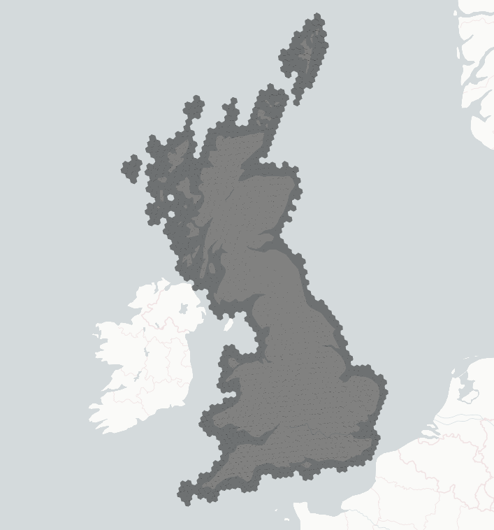

Dynamical Data API
Dynamical Data Package
Download & process numerical weather predictions from Dynamical.org.
We convert the ECMWF ENS 0.25 degree data to these H3 resolution 5 hexagons:

Note: The generic geospatial logic for mapping latitude/longitude grids to H3 hexagons has been extracted to the packages/geo package. This package (dynamical_data) focuses specifically on the ingestion, processing, and storage of time-varying NWP datasets like ECMWF. The H3 grid weights are provided as a Dagster asset from the geo package, eliminating the need for precomputed static files.
Data storage experiments
All these experiments were performed on a single model run of ECMWF ENS (2026-02-23T00), just for Great Britain.
The conclusion is to:
- sort by "init_time", "lead_time", "ensemble_member", "h3_index"
- compression="zstd", compression_level=14 = 51 MB
As a comparison: Saving a single ECMWF ENS run using float32, and zstd compression (with default compression
level) results in Parquet files ranging between about 205 MB to 220 MB.
Test different sort orders:
(After scaling to [0, 255] and saving as UInt8, and compressing using zstd with the default level)
"init_time", "lead_time", "ensemble_member", "h3_index" = 54 MB (BEST YET)
"init_time", "ensemble_member", "lead_time", "h3_index" = 56 MB
"init_time", "lead_time", "h3_index", "ensemble_member" = 59 MB
"init_time", "h3_index", "lead_time", "ensemble_member" = 60 MB
"init_time", "ensemble_member", "h3_index", "lead_time" = 62 MB
Test compression algorithm
(after sorting by "init_time", "lead_time", "ensemble_member", "h3_index", and scaling to [0, 255]
and saving as UInt8)
compression="zstd", compression_level=12 = 54 MB
compression="zstd", compression_level=13 = 53 MB
compression="zstd", compression_level=14 = 51 MB, 2.26s (BEST MIX OF SPEED & COMPRESSION RATIO)
compression="zstd", compression_level=15 = 51 MB
compression="zstd", compression_level=20 = 51 MB
compression="zstd", compression_level=22 = 51 MB
compression="lz4" = 68 MB
compression="snappy" = 78 MB
compression="gzip" = 56 MB
compression="gzip", compression_level=9 = 53 MB, 1.49s
compression="brotli", compression_level=6 = 54 MB, 1.88s
compression="brotli", compression_level=8 = 54 MB, 2.75s
compression="brotli", compression_level=9 = 53 MB, 3.9s
compression="brotli", compression_level=10 = 48 MB, 12.59s
compression="brotli", compression_level=11 = 48 MB, 17.75s!
Testing different dtypes
(after sorting by "init_time", "lead_time", "ensemble_member", "h3_index", and compressing using zstd level 14)
Scale to 2¹⁶ - 1, and save as UInt16 = 145 MB
Scale to 2¹⁰ - 1, and save as UInt16 = 79 MB
Scale to 2⁹ - 1, and save as UInt16 = 62 MB
Scale to 2⁸ - 1, and save as UInt16 = 51 MB
Scale to 2⁸ - 1, and save as UInt8 = 51 MB
Physical Wind Logic
To ensure physically realistic wind speed and direction, we interpolate the Cartesian u and v components linearly instead of using circular interpolation on speed and direction. This approach avoids "phantom high wind" artifacts that can occur during rapid direction shifts (e.g., from 359 to 1 degree). Wind speed and direction are reconstructed from the interpolated u and v components after the interpolation step.
dynamical_data.processing
Classes
Bases: ValueError
Raised when an ECMWF Zarr store does not match the expected schema.
Source code in packages/dynamical_data/src/dynamical_data/processing.py
| class MalformedZarrError(ValueError):
"""Raised when an ECMWF Zarr store does not match the expected schema."""
|
Functions
download_and_scale_ecmwf(nwp_init_time, h3_grid)
Download and scale ECMWF data for a specific initialization time.
Parameters:
| Name |
Type |
Description |
Default |
nwp_init_time
|
datetime
|
The initialization time to download.
|
required
|
h3_grid
|
DataFrame[H3GridWeights]
|
The H3 grid weights to use for spatial aggregation.
This is injected via Dagster, allowing dynamic resolution scaling
without hardcoding static file paths.
|
required
|
Source code in packages/dynamical_data/src/dynamical_data/processing.py
104
105
106
107
108
109
110
111
112
113
114
115
116
117
118
119
120
121
122
123
124
125
126
127
128
129
130
131
132
133
134
135
136
137
138
139
140
141
142
143
144
145
146
147
148
149
150
151
152
153
154
155
156
157 | def download_and_scale_ecmwf(
nwp_init_time: datetime, h3_grid: pt.DataFrame[H3GridWeights]
) -> pl.DataFrame:
"""Download and scale ECMWF data for a specific initialization time.
Args:
nwp_init_time: The initialization time to download.
h3_grid: The H3 grid weights to use for spatial aggregation.
This is injected via Dagster, allowing dynamic resolution scaling
without hardcoding static file paths.
"""
# nwp_init_time is aware, we need to make it naive for the selection if it's not already.
utc_nwp_init_time = np.datetime64(nwp_init_time.astimezone(timezone.utc).replace(tzinfo=None))
loaded_ds = download_ecmwf(utc_nwp_init_time, h3_grid=h3_grid)
processed = process_ecmwf_dataset(
nwp_init_time=nwp_init_time, loaded_ds=loaded_ds, h3_grid=h3_grid
)
# DATA TYPE TRANSITION RATIONALE:
# 1. Disk (UInt8): Weather variables are stored as scaled 8-bit unsigned integers to save
# space and bandwidth.
# 2. Interpolation (Float64): During spatial weighting and H3 grid joins, we use Float64
# to maintain precision and avoid rounding errors during aggregation.
# 3. Memory/Model (Float32): After processing, we cast to Float32 for memory efficiency
# in the ML model.
#
# We do NOT cast back to UInt8 in memory because:
# - It would cause a "staircase" effect by quantizing interpolated values, defeating
# the purpose of 30-minute upsampling.
# - It risks silent underflow during differencing operations (e.g., calculating trends
# like temp_trend_6h = current - lagged).
# Load scaling parameters
scaling_params_path = ASSETS_PATH / "ecmwf_scaling_params.csv"
scaling_params = load_scaling_params(scaling_params_path)
# CIRCULAR VARIABLE SCALING:
# Exclude categorical variables and wind components from empirical min-max scaling.
# Storing wind components as Float32 avoids destroying circular topology via
# min-max scaling and simplifies downstream processing.
scaling_params = scaling_params.filter(
~pl.col("col_name").is_in(
[
"categorical_precipitation_type_surface",
"wind_u_10m",
"wind_v_10m",
"wind_u_100m",
"wind_v_100m",
]
)
)
return scale_to_uint8(processed, scaling_params)
|
download_ecmwf(nwp_init_time, h3_grid, ds=None)
Download and process ECMWF data for a specific initialization time.
Parameters:
| Name |
Type |
Description |
Default |
nwp_init_time
|
datetime64
|
The initialization time to download.
|
required
|
h3_grid
|
DataFrame[H3GridWeights]
|
The H3 grid to use for spatial bounds.
|
required
|
ds
|
Dataset | None
|
Optional xarray Dataset. If None, connects to the production icechunk store.
This allows dependency injection during testing.
|
None
|
Source code in packages/dynamical_data/src/dynamical_data/processing.py
160
161
162
163
164
165
166
167
168
169
170
171
172
173
174
175
176
177
178
179
180
181
182
183
184
185
186
187
188
189
190
191
192
193
194
195
196
197
198
199
200
201
202
203
204
205
206
207
208
209
210
211
212
213
214
215
216
217
218
219
220
221
222
223
224
225
226
227
228
229
230
231
232
233
234
235
236
237
238
239
240
241
242
243
244
245
246
247
248
249
250
251
252
253
254
255
256
257
258
259
260
261
262
263
264
265
266
267
268
269
270
271
272
273
274
275
276
277 | def download_ecmwf(
nwp_init_time: np.datetime64,
h3_grid: pt.DataFrame[H3GridWeights],
ds: xr.Dataset | None = None,
) -> xr.Dataset:
"""Download and process ECMWF data for a specific initialization time.
Args:
nwp_init_time: The initialization time to download.
h3_grid: The H3 grid to use for spatial bounds.
ds: Optional xarray Dataset. If None, connects to the production icechunk store.
This allows dependency injection during testing.
"""
if h3_grid.is_empty():
raise ValueError("h3_grid is empty. Cannot download ECMWF data for an empty grid.")
if ds is None:
# Connect to the production icechunk store
storage = icechunk.s3_storage(
bucket=_SETTINGS.ecmwf_s3_bucket,
prefix=_SETTINGS.ecmwf_s3_prefix,
region=DEFAULT_AWS_REGION,
anonymous=True,
)
repo = icechunk.Repository.open(storage)
session = repo.readonly_session("main")
# chunks=None is a deliberate design choice to disable Dask and avoid memory overhead.
# We set `chunks=None` to disable Dask. This is because we want to
# manually control the parallelization of S3 fetches using a
# ThreadPoolExecutor below, which avoids Dask's overhead for this
# specific I/O-bound task.
#
# Explicitly setting decode_timedelta=True avoids reliance on Xarray's
# deprecated automatic decoding of time units, ensuring lead_time is
# correctly parsed as timedelta64[ns].
ds = xr.open_zarr(session.store, chunks=None, decode_timedelta=True)
if ds is None:
raise MalformedZarrError("Dataset could not be loaded")
validate_dataset_schema(ds)
if nwp_init_time not in ds.init_time.values:
raise ValueError(f"{nwp_init_time} is not in ds.init_time.values")
# We subset the dataset to only the required variables defined in the Nwp schema
# to save network bandwidth and memory during the download process.
# We also include the raw wind components (10u, 10v, 100u, 100v) which are
# needed for calculating wind speed and direction later.
# Cast to xr.Dataset to satisfy the type checker, as indexing with a list
# can sometimes be misidentified as returning a DataArray.
ds = cast(xr.Dataset, ds[list(REQUIRED_NWP_VARS)])
# Check for empty coordinates before computing bounds to fail gracefully.
if ds.longitude.size == 0 or ds.latitude.size == 0:
raise ValueError("Dataset has empty longitude or latitude coordinates.")
# Validate longitude range.
# NOTE: The ECMWF ENS dataset from Dynamical.org already uses the [-180, 180]
# range for longitude. We only validate this here to ensure the upstream
# data format hasn't changed unexpectedly, rather than rolling the
# coordinates ourselves.
if ds.longitude.min() < -180 or ds.longitude.max() > 180:
raise ValueError("Dataset longitude must be in the range [-180, 180]")
# Find spatial bounds from grid
min_lat, max_lat = h3_grid.select(
pl.col("nwp_lat").min().alias("min_lat"),
pl.col("nwp_lat").max().alias("max_lat"),
).row(0)
# Robust slicing: xarray slice(a, b) is sensitive to coordinate direction.
# We check the first two elements to determine if latitude/longitude are ascending or descending.
# Single-point forecasts (length 1) do not have a direction, so we bypass the
# ascending/descending check to avoid an IndexError.
if len(ds.latitude.values) > 1:
lat_is_descending = ds.latitude.values[0] > ds.latitude.values[1]
lat_slice = slice(max_lat, min_lat) if lat_is_descending else slice(min_lat, max_lat)
else:
lat_slice = slice(min_lat, max_lat)
min_lng, max_lng = h3_grid.get_column("nwp_lng").min(), h3_grid.get_column("nwp_lng").max()
if len(ds.longitude.values) > 1:
lng_is_descending = ds.longitude.values[0] > ds.longitude.values[1]
lng_slice = slice(max_lng, min_lng) if lng_is_descending else slice(min_lng, max_lng)
else:
lng_slice = slice(min_lng, max_lng)
# NOTE: This will fail if the region crosses the anti-meridian. But we do not anticipate
# forecasting near the anti-meridian.
ds_cropped = ds.sel(
latitude=lat_slice,
longitude=lng_slice,
init_time=nwp_init_time,
)
# Explicitly check for an empty spatial intersection after slicing.
# This prevents downstream KeyErrors during DataFrame conversion.
if ds_cropped.longitude.size == 0 or ds_cropped.latitude.size == 0:
raise ValueError("No spatial overlap found between H3 grid and NWP dataset.")
def download_array(var_name: str) -> dict[str, xr.DataArray]:
return {var_name: ds_cropped[var_name].compute()}
# The download is I/O bound (S3 network requests). We use a
# ThreadPoolExecutor to parallelize network latency across multiple
# variables. A ProcessPoolExecutor would be less efficient here due to the
# high serialization overhead of Xarray objects between processes.
data_arrays: dict[str, xr.DataArray] = {}
with concurrent.futures.ThreadPoolExecutor() as executor:
futures = [
executor.submit(download_array, str(name)) for name in ds_cropped.data_vars.keys()
]
for future in concurrent.futures.as_completed(futures):
data_arrays.update(future.result())
return xr.Dataset(data_arrays)
|
process_ecmwf_dataset(nwp_init_time, loaded_ds, h3_grid)
Vectorized processing of ECMWF dataset to H3 grid.
Source code in packages/dynamical_data/src/dynamical_data/processing.py
377
378
379
380
381
382
383
384
385
386
387
388
389
390
391
392
393
394
395
396
397
398
399
400
401
402
403
404
405
406
407
408
409
410
411
412
413
414
415
416
417
418
419
420
421
422
423
424
425 | def process_ecmwf_dataset(
nwp_init_time: datetime,
loaded_ds: xr.Dataset,
h3_grid: pt.DataFrame[H3GridWeights],
) -> pt.DataFrame[Nwp]:
"""Vectorized processing of ECMWF dataset to H3 grid."""
# Cast coordinates to Float32 before the join to ensure exact bit-level matching.
h3_grid = h3_grid.with_columns(
[pl.col("nwp_lng").cast(pl.Float32), pl.col("nwp_lat").cast(pl.Float32)]
)
# Precompute latitude and longitude grids
lat_grid, lon_grid = np.meshgrid(
loaded_ds.latitude.values, loaded_ds.longitude.values, indexing="ij"
)
lat_grid_raveled = lat_grid.ravel()
lon_grid_raveled = lon_grid.ravel()
# Iterate over lead_time and ensemble_member to process in chunks.
processed_chunks = []
for lead_time in loaded_ds.lead_time.values:
for ensemble_member in loaded_ds.ensemble_member.values:
ds_chunk = loaded_ds.sel(lead_time=lead_time, ensemble_member=ensemble_member)
processed_chunks.append(
_process_chunk(
ds_chunk,
h3_grid,
lat_grid_raveled=lat_grid_raveled,
lon_grid_raveled=lon_grid_raveled,
)
)
processed = pl.concat(processed_chunks)
# Compute valid_time and init_time.
processed = processed.with_columns(
init_time=pl.lit(nwp_init_time).cast(pl.Datetime("us", "UTC")),
valid_time=(
pl.lit(nwp_init_time).cast(pl.Datetime("us", "UTC"))
+ pl.col("lead_time").cast(pl.Duration("us"))
).cast(pl.Datetime("us", "UTC")),
ensemble_member=pl.col("ensemble_member").cast(pl.UInt8),
).drop("lead_time")
# Sort before validation to ensure consistent output order
processed = processed.sort(by=["init_time", "valid_time", "ensemble_member", "h3_index"])
# Validate to ensure the interpolated data matches the expected schema
return Nwp.validate(processed, drop_superfluous_columns=True)
|
validate_dataset_schema(ds)
Enforces the data contract for incoming ECMWF Zarr stores.
Ensures all required spatial and temporal dimensions and coordinates exist
before processing begins.
Parameters:
| Name |
Type |
Description |
Default |
ds
|
Dataset
|
The xarray Dataset to validate.
|
required
|
Raises:
Source code in packages/dynamical_data/src/dynamical_data/processing.py
46
47
48
49
50
51
52
53
54
55
56
57
58
59
60
61
62
63
64
65
66
67
68
69
70
71
72
73
74
75
76
77
78
79
80
81
82
83
84
85
86
87
88
89
90
91
92
93
94
95
96
97
98
99
100
101 | def validate_dataset_schema(ds: xr.Dataset) -> None:
"""Enforces the data contract for incoming ECMWF Zarr stores.
Ensures all required spatial and temporal dimensions and coordinates exist
before processing begins.
Args:
ds: The xarray Dataset to validate.
Raises:
MalformedZarrError: If any required coordinates or variables are missing.
"""
required_coords = {"latitude", "longitude", "init_time", "lead_time", "ensemble_member"}
missing_coords = required_coords - set(ds.coords)
if missing_coords:
raise MalformedZarrError(f"Dataset is missing required coordinates: {missing_coords}")
# Check for a minimal set of required data variables
# These are the variables required by the Nwp schema in contracts.data_schemas
missing_vars = REQUIRED_NWP_VARS - set(ds.data_vars)
if missing_vars:
raise MalformedZarrError(f"Dataset is missing required data variables: {missing_vars}")
# Check that all data variables have the expected dimensions and order.
# The canonical order is (latitude, longitude, init_time, lead_time, ensemble_member).
# Note: init_time might be a scalar coordinate after selection, so we allow it to be missing
# from dimensions of the DataArray if it's present in the Dataset coordinates.
expected_dims = ("latitude", "longitude", "init_time", "lead_time", "ensemble_member")
for var_name, da in ds.data_vars.items():
# Check for missing dimensions (excluding init_time)
missing_dims = required_coords - set(da.dims) - {"init_time"}
if missing_dims:
raise MalformedZarrError(
f"Variable '{var_name}' is missing required dimensions: {missing_dims}"
)
# Check dimension order (ignoring init_time if it's a scalar coordinate)
actual_dims = [d for d in da.dims if d in expected_dims]
expected_dims_filtered = [d for d in expected_dims if d in da.dims]
if actual_dims != expected_dims_filtered:
# Transpose the data to the expected order
ds[var_name] = da.transpose(*expected_dims_filtered)
# Check coordinate dtypes
if not np.issubdtype(ds.latitude.dtype, np.floating):
raise MalformedZarrError(
f"latitude has wrong dtype: {ds.latitude.dtype}, expected floating"
)
if not np.issubdtype(ds.longitude.dtype, np.floating):
raise MalformedZarrError(
f"longitude has wrong dtype: {ds.longitude.dtype}, expected floating"
)
if not np.issubdtype(ds.init_time.dtype, np.datetime64):
raise MalformedZarrError(
f"init_time has wrong dtype: {ds.init_time.dtype}, expected datetime64"
)
|
dynamical_data.scaling
Functions
load_scaling_params(csv_path)
Load scaling parameters from a CSV file.
Source code in packages/dynamical_data/src/dynamical_data/scaling.py
| def load_scaling_params(csv_path: Path) -> pl.DataFrame:
"""Load scaling parameters from a CSV file."""
return pl.read_csv(csv_path)
|
recover_physical_units(df, scaling_params)
Convert uint8 columns back to physical units.
DATA TYPE TRANSITION RATIONALE:
1. Disk (UInt8): Weather variables are stored as scaled 8-bit unsigned integers to save
space and bandwidth.
2. Interpolation (Float64): During spatial weighting and H3 grid joins, we use Float64
to maintain precision and avoid rounding errors during aggregation.
3. Memory/Model (Float32): After processing, we cast to Float32 for memory efficiency
in the ML model.
We do NOT cast back to UInt8 in memory because:
- It would cause a "staircase" effect by quantizing interpolated values, defeating
the purpose of 30-minute upsampling.
- It risks silent underflow during differencing operations (e.g., calculating trends
like temp_trend_6h = current - lagged).
Parameters:
| Name |
Type |
Description |
Default |
df
|
DataFrame
|
Polars DataFrame with uint8 columns.
|
required
|
scaling_params
|
DataFrame
|
DataFrame with col_name, buffered_min, buffered_range.
|
required
|
Returns:
| Type |
Description |
DataFrame
|
DataFrame with recovered float32 columns.
|
Source code in packages/dynamical_data/src/dynamical_data/scaling.py
56
57
58
59
60
61
62
63
64
65
66
67
68
69
70
71
72
73
74
75
76
77
78
79
80
81
82
83
84
85
86
87
88
89
90
91
92
93
94
95
96
97
98 | def recover_physical_units(df: pl.DataFrame, scaling_params: pl.DataFrame) -> pl.DataFrame:
"""Convert uint8 columns back to physical units.
DATA TYPE TRANSITION RATIONALE:
1. Disk (UInt8): Weather variables are stored as scaled 8-bit unsigned integers to save
space and bandwidth.
2. Interpolation (Float64): During spatial weighting and H3 grid joins, we use Float64
to maintain precision and avoid rounding errors during aggregation.
3. Memory/Model (Float32): After processing, we cast to Float32 for memory efficiency
in the ML model.
We do NOT cast back to UInt8 in memory because:
- It would cause a "staircase" effect by quantizing interpolated values, defeating
the purpose of 30-minute upsampling.
- It risks silent underflow during differencing operations (e.g., calculating trends
like temp_trend_6h = current - lagged).
Args:
df: Polars DataFrame with uint8 columns.
scaling_params: DataFrame with col_name, buffered_min, buffered_range.
Returns:
DataFrame with recovered float32 columns.
"""
exprs = []
for row in scaling_params.to_dicts():
col_name = row["col_name"]
if col_name not in df.columns:
continue
buffered_min = row["buffered_min"]
buffered_range = row["buffered_range"]
if buffered_range == 0.0:
expr = pl.lit(buffered_min, dtype=pl.Float32).alias(col_name)
else:
expr = (
(pl.col(col_name).cast(pl.Float32) / 255.0) * buffered_range + buffered_min
).alias(col_name)
exprs.append(expr)
return df.with_columns(exprs)
|
scale_to_uint8(df, scaling_params)
Scale numeric columns to uint8 [0, 255] based on scaling parameters.
Parameters:
| Name |
Type |
Description |
Default |
df
|
DataFrame
|
Polars DataFrame with float32 columns.
|
required
|
scaling_params
|
DataFrame
|
DataFrame with col_name, buffered_min, buffered_range.
|
required
|
Returns:
| Type |
Description |
DataFrame
|
DataFrame with rescaled uint8 columns.
|
Source code in packages/dynamical_data/src/dynamical_data/scaling.py
11
12
13
14
15
16
17
18
19
20
21
22
23
24
25
26
27
28
29
30
31
32
33
34
35
36
37
38
39
40
41
42
43
44
45
46
47
48
49
50
51
52
53 | def scale_to_uint8(df: pl.DataFrame, scaling_params: pl.DataFrame) -> pl.DataFrame:
"""Scale numeric columns to uint8 [0, 255] based on scaling parameters.
Args:
df: Polars DataFrame with float32 columns.
scaling_params: DataFrame with col_name, buffered_min, buffered_range.
Returns:
DataFrame with rescaled uint8 columns.
"""
exprs = []
for row in scaling_params.to_dicts():
col_name = row["col_name"]
if col_name not in df.columns:
continue
buffered_min = row["buffered_min"]
buffered_max = row["buffered_max"]
buffered_range = row["buffered_range"]
# Handle NaNs first (Polars treats NaN as > any finite number)
base_col = pl.col(col_name).fill_nan(None)
clipped_col = base_col.clip(lower_bound=buffered_min, upper_bound=buffered_max)
if buffered_range == 0.0:
expr = pl.lit(0, dtype=pl.UInt8).alias(col_name)
else:
# Categorical variables like precipitation type are handled natively by this loop
# because their `buffered_min` is 0.0 and `buffered_range` is 255.0 in the
# scaling parameters, which naturally simplifies to a direct cast to UInt8
# without scaling artifacts.
expr = (
(((clipped_col - buffered_min) / buffered_range) * 255)
.round()
.cast(pl.UInt8)
.alias(col_name)
)
exprs.append(expr)
return df.with_columns(exprs)
|